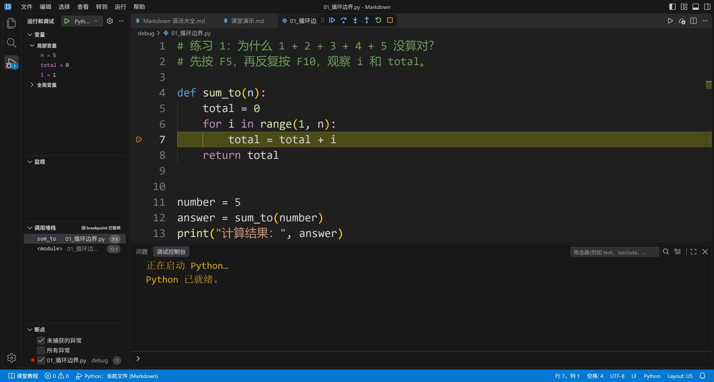
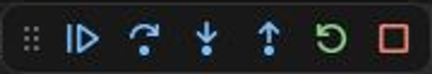
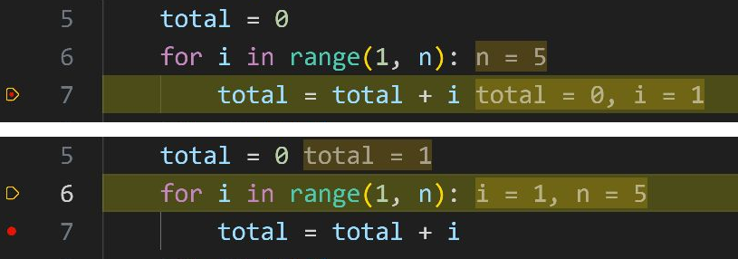
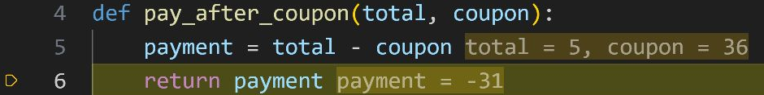
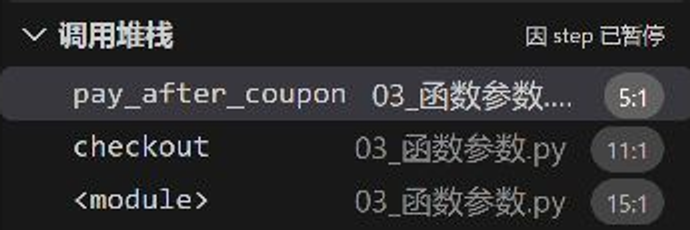

标题
在一行的开头写 #，留一个空格，再写标题。一个 # 是一级标题，两个是二级标题，最多写六个。
# 我的大学第一周
## 本周课程
### 高等数学预览效果
我的大学第一周
本周课程
高等数学
一级标题写整篇笔记的名称，二级标题写各个部分。标题下换一行就可以写正文；前后各空一行会更容易阅读。
没有找到相关内容。换一个词试试，例如“图片”或“换行”。
Markdown 是一种用简单符号给文字排版的格式。比如，行首加上 # ，这行文字就会变成标题。
下面可以查写法、看效果，也可以复制示例到练习网页里试。第一次使用，先完成这四步。
点右上角“打开练习网页”。左边是文件列表，中间是编辑区；点击文件名，就能打开文件。
点左上角“文件 → 新建 Markdown 文件”，输入 我的大学第一周.md，按回车。.md 是 Markdown 文件的后缀，要保留它。
# 我的大学第一周# 用英文符号，后面按一次空格，再输入标题。
点编辑区右上角的“打开侧边预览”按钮。也可以先按 Ctrl + K，松开后再按 V。左边显示写法，右边显示排版结果；修改文字后，预览会跟着更新。
预览中出现大标题，就可以继续往下写了。结束练习时，按保存与下载里的步骤把文件下载到电脑。
标题用来区分章节，加粗用来标出重点。符号要用英文半角字符。
在一行的开头写 #，留一个空格，再写标题。一个 # 是一级标题，两个是二级标题，最多写六个。
# 我的大学第一周
## 本周课程
### 高等数学一级标题写整篇笔记的名称，二级标题写各个部分。标题下换一行就可以写正文；前后各空一行会更容易阅读。
把要加粗的文字放在两对星号中间。星号和文字之间不要留空格。
明天交 **程序设计作业**。明天交 程序设计作业。
**重点** 能加粗；** 重点 ** 通常会把星号也显示出来。
两边各一个星号是斜体，各两个波浪号是删除线。
*Introduction to Algorithms*
~~周三提交~~ 改为周五提交。Introduction to Algorithms
周三提交 改为周五提交。
在引用内容前写 >，后面留一个空格。引用多段文字时，中间的空行也可以写一个 >。
> 学而不思则罔。
>
> 思而不学则殆。学而不思则罔。
思而不学则殆。
把三个减号单独放一行，前后各空一行。预览里会出现一条横线。
上半部分。
---
下半部分。上半部分。
下半部分。
不要紧接着正文写一行 ---，那种写法可能把上一行变成二级标题。
编辑区里的回车和预览里的换行不是一回事。下面几段文字只改了行末的写法，可以直接比较效果。
两行文字之间没有空行时，默认仍属于同一段。预览会根据宽度排版，不一定在你按回车的位置换行。
今天学习 Markdown。
明天整理课堂笔记。今天学习 Markdown。 明天整理课堂笔记。
窗口变窄时，长句也会自动折到下一行。这只是显示宽度变了，并没有多出一个段落。
在两段文字中间留一个空行，也就是在第一段末尾连按两次回车。
第一段。
第二段。
第三段。第一段。
第二段。
第三段。
空一行和空三行都只是分段，通常不会让预览中的间距继续增加。
写完第一行，按两次空格，再按回车。下面行末标出的两个位置都是空格，复制按钮会保留它们。
第一行。
第二行。第一行。
第二行。
一个空格不够。这种换行仍在同一段里，所以两行之间没有新段落的间距。
在第一行末尾写一个反斜杠 \，然后按回车。它比看不见的行末空格更容易检查。
第一行。\
第二行。第一行。
第二行。
这里是反斜杠 \，不是路径中常用的斜杠 /。
<br> 是 HTML 的换行标签。写到哪里，就从哪里换行；表格单元格内也能用。
周一<br>高等数学
周二<br><br>程序设计周一
高等数学
周二
程序设计
连续写两个 <br> 会多空一行。普通正文分段直接留空行就可以。
如果希望每次回车都在预览中换行，可以修改 VS Code 的预览设置。
markdown.preview.breaks打开设置，搜索上面的完整名称，勾选对应选项。本文的例子按默认关闭的效果展示；代码块里的换行不受这项设置影响。
一项写一行。标记后面要有空格；同一级的标记对齐。
在每一项前写减号和一个空格。加号、星号也可以作列表标记，一份列表里统一使用一种即可。
- 阅读讲义
- 整理笔记
- 完成练习用数字、英文句点和空格开头。后面的序号由预览自动排列，所以源码也可以全写 1.。
1. 打开网页
1. 新建文件
1. 观察预览第一项的数字决定起始编号。如果第一项写 7.，预览就从 7 开始。
子项目在前面加四个空格。返回上一级时，去掉这四个空格，让标记和同级项目对齐。
- 周一
- 高等数学
- 程序设计
- 周二
1. 预习
2. 复习这里的四个空格适用于这个示例。如果父项编号很长，子项还需要缩进到父项正文开始的位置之后。
先空一行，再把新段落缩进到该项正文开始的位置。通常在列表标记后留一个空格：- 占 2 个字符，续段前留 2 个空格；1. 占 3 个，留 3 个空格；10. 占 4 个，留 4 个空格。嵌套列表还要加上父层已有的缩进。下面用 1. 演示，所以续段前是 3 个空格。
1. 观察现象
先记录实际结果。
2. 尝试修改
再用相同输入检查。观察现象
先记录实际结果。
尝试修改
再用相同输入检查。
[ ] 表示未完成，[x] 表示已完成。方括号里面的空格不能漏。
- [ ] 阅读讲义
- [x] 完成练习GitHub 会把它们显示成复选框。本练习网页沿用 VS Code 原生 Markdown 预览，可能直接显示 [ ] 和 [x]；这不代表你写错了。
相对路径从当前这份 .md 文件所在的文件夹开始算。先确定笔记在哪里，再找链接或图片在哪里。
方括号里写显示的文字，小括号里写网址。注意括号都用英文符号。
[南京大学](https://www.nju.edu.cn)预览中会显示“南京大学”，点击后打开网址。直接在编辑区看时，括号和网址都会保留。
如果当前笔记和 notes 文件夹放在一起，就用下面的路径打开 notes 里的文件。
[打开笔记](./notes/链接目标.md)练习目录已经包含这份“链接目标.md”，可以直接试。链接到自己的文件时，把路径和文件名换成实际位置。
图片的写法比链接多一个感叹号。方括号里写图片说明，小括号里写图片地址。
这张图已经放在练习目录的 assets 文件夹里。如果用自己的图片，先通过“文件 → 导入本地文件…”把图片导入，再写它的实际路径。
假设“我的笔记.md”和 assets 文件夹放在一起，文件结构如下。
文件位置
Markdown/
├── 我的笔记.md
└── assets/
└── 山间日出.svg./ 从当前文件夹开始，assets/ 进入 assets，再找到图片。这里的 ./ 也可以省略，写成 assets/山间日出.svg。
如果笔记放在 notes 里面，就需要先退出 notes，再进入 assets。
文件位置
Markdown/
├── notes/
│ └── 课堂笔记.md
└── assets/
└── 山间日出.svg../ 向上走一级，../../ 向上走两级。路径里统一用 /，不要直接粘贴 Windows 的 C:\… 地址。
Markdown 里的代码是用来展示的。要运行 Python，请打开 .py 文件，再启动调试。
把函数名、文件名或命令放在一对反引号中间。反引号通常在键盘 Esc 下方，和单引号不是同一个符号。
用 `print()` 输出结果。
把文件保存为 `notes.md`。用 print() 输出结果。
把文件保存为 notes.md。
第一行写三个反引号，再写语言名；最后另起一行，写三个反引号结束。代码按原来的缩进和换行显示。
```python
name = "南大"
print("你好，" + name)
```name = "南大"
print("你好，" + name)python 用来选择代码配色，不会启动 Python。也可以写 c、javascript、bash；不写语言名也能显示代码块。
内容里已经有一个反引号时，外面用两个反引号包起来。
``这里有一个 ` 符号``这里有一个 ` 符号
竖线分隔列，一行代表一行内容。表头下面的分隔行不能漏。
第一行写表头，第二行每列写三个减号，从第三行开始写数据。源码里的列宽不必完全对齐。
| 课程 | 星期 |
| --- | --- |
| 高等数学 | 周一 |
| 程序设计 | 周三 || 课程 | 星期 |
|---|---|
| 高等数学 | 周一 |
| 程序设计 | 周三 |
冒号在左边表示左对齐，两边都有表示居中，在右边表示右对齐。只改第二行，就能改变整列的对齐方式。
| 课程 | 星期 | 学分 |
| :--- | :---: | ---: |
| 高数 | 一 | 5 |
| 程设 | 三 | 4 || 课程 | 星期 | 学分 |
|---|---|---|
| 高数 | 一 | 5 |
| 程设 | 三 | 4 |
单元格内换行用 <br>。如果内容本身需要竖线，在竖线前加反斜杠，避免它被当成分列标记。
| 内容 | 写法 |
| --- | --- |
| 第一行<br>第二行 | 换行 |
| A \| B | 竖线 || 内容 | 写法 |
|---|---|
| 第一行 第二行 | 换行 |
| A | B | 竖线 |
这个练习网页支持 LaTeX 数学公式。一句话里的公式用一对 $，单独占一行的公式用两对 $$。
把公式放在两个美元符号中间。开头的 $ 后、结尾的 $ 前都不要留空格。
面积为 $S=\pi r^2$。面积为 。
开始和结束各用一行 $$，中间写公式，整块前后各空一行。
求和公式：
$$
\sum_{i=1}^{n} i=\frac{n(n+1)}{2}
$$求和公式：
_ 是下标，^ 是上标。上标或下标有多个字符时，用花括号括住。
$x_i^2$
$x_{ij}^{10}$x^10 只会把 1 放到上标里，0 仍在后面。要写 10 次方，用 x^{10}。
\frac 后面的第一组花括号放分子，第二组放分母；\sqrt 后的花括号放被开方的内容。
$\frac{a+b}{c}$
$\sqrt{x+1}$这些命令以反斜杠开头。字母名称的大小写会影响结果。
$\alpha + \beta$
$x \leq 5$
$a \times b$
$\infty$公式显示不出来时，先检查美元符号、反斜杠和花括号是否完整。
在标记为 mermaid 的代码块里写步骤和连线，预览会画成图。
flowchart TD 表示从上到下画。A、B、C 是节点名称；方括号里的文字显示在方框中；箭头连接两个节点。
```mermaid
flowchart TD
A[观察问题] --> B[提出猜想]
B --> C[动手验证]
```把 TD 改成 LR，图就会从左到右排列。代码块开头必须写 mermaid，写成 python 或不写，就只会显示代码。
判断节点用花括号。两条连线后面分别写条件，让读者知道沿哪条线继续。
```mermaid
flowchart TD
A{结果正确吗} -->|是| B[结束]
A -->|否| C[检查代码]
C --> A
```同一个节点名称会指向同一个节点。最后一行 C --> A 把“检查代码”连回前面的判断。
折叠和注释用到少量 HTML。照着下面的完整写法输入，并保留开始与结束标签。
<details> 是整个折叠区域的开始，</details> 是结束。<summary> 和 </summary> 中间写可以点击的标题。
<details>
<summary>查看答案</summary>
答案是 **15**。
</details>答案是 15。
标题后空一行再写正文，正文和结束标签之间也空一行，这样正文中的加粗、列表等 Markdown 写法才能正常解析。点右侧“查看答案”可以试一下。
把备注放进 <!-- 和 --> 之间，预览中不会显示这部分文字。
这段文字会显示。
<!-- 这里留给自己做备注 -->这段文字会显示。
备注仍然保存在 .md 文件里。把源文件发给别人时，对方也能看到备注。
如果希望星号、井号直接显示出来，而不是参与排版，在符号前加反斜杠。
\*\*重点\*\*
\# 这不是标题**重点**
# 这不是标题
展示整段语法时，行内代码或代码块通常更方便，不需要逐个转义符号。
网页里的练习会保存在当前浏览器中。要交作业、换电脑或留一份备份，需要下载文件。
.md 文件。下载到的是 Markdown 源文件。以后可以用 VS Code 打开，继续修改。
如果笔记用了本地图片，点“文件 → 下载整个练习目录（ZIP）”。解压后保留 .md 文件和图片文件夹的位置，图片路径才能继续使用。
只下载 .md 文件不会把图片装进去。换电脑后图片打不开，先检查图片文件是否也带过去了。
点“文件 → 导入本地文件…”，选择 .md 文件。如果有配套图片，用“导入本地文件夹…”一起导入。
新建 我的大学第一周.md，完成下面七项。做好一项，可以勾选一项。
# 我的大学第一周
## 本周课程
- **高等数学**
- 程序设计
- 大学英语
## 学习记录
| 课程 | 星期 | 学分 |
| :--- | :---: | ---: |
| 高等数学 | 周一 | 5 |
| 程序设计 | 周三 | 4 |
| 大学英语 | 周五 | 2 |
今天学会了写 Markdown。

行内公式：$x^2$。
```python
name = "南大"
print("你好，" + name)
```这个图片路径适用于直接建在练习目录中的笔记。如果把笔记放进子文件夹，需要相应调整路径。
下面两个例子都能在练习网页中直接运行。先打开左侧 debug 文件夹，再选择对应的 Python 文件。第一次启动会加载 Python，请等下方“调试控制台”显示“Python 已就绪”。
断点是给程序设置的暂停位置。程序运行到这一行时，会在执行这一行之前停下来，方便我们查看变量、逐步执行。
01_循环边界.py找到第 7 行 total = total + i。
出现红点，表示断点已经设好。再点一次可以取消。也可以先把光标放到这一行，再按 F9。
本网页默认会先停在第一条可执行语句。此时再按一次 F5，才会运行到刚设的断点。黄色高亮行是下一条要执行的代码，不是已经执行完的代码。

n = 5 是这次调用传入的参数值：主程序把 number = 5 传给 sum_to(number)，因此函数内的 n 等于 5。编辑器若在代码右侧显示灰底的 n = 5，那是调试器的提示，不需要输入到源码里。
启动调试后，上方会出现一条浮动工具栏。将鼠标停在图标上可以看到操作名称。下面列出本练习网页的快捷键。

如果笔记本把 F5、F10 用作亮度或音量键，试着同时按住 Fn，或者直接点击工具栏里的同名按钮。
这个函数要计算 1 + 2 + 3 + 4 + 5，预期是 15，原程序却得到 10。断点停在加法这一行时，先看左侧“变量”：n = 5、i = 1、total = 0。
total = total + i。此时 total 从 0 变成 1。return total 时，i 最后停在 4，total 为 10。全过程没有一次 i 等于 5。
下面记录了这段函数的实际执行过程。点“下一步”看变量变化；要亲自设断点，在练习网页里操作。
正在读取执行记录……
range(1, n) 包含起点 1，不包含终点 n。因此需要把终点改成 n + 1。
for i in range(1, n + 1):
total = total + i先停止调试，再修改、重新运行。原来的输入仍用 number = 5，控制台应输出“计算结果：15”。
打开 03_函数参数.py。买 3 本书，每本 12 元，使用 5 元优惠券，应付 12 × 3 − 5 = 31 元。
给第 11 行 result = pay_after_coupon(coupon, subtotal) 设置断点。按 F5 启动，再按 F5 运行到断点。此时 subtotal = 36、coupon = 5。
按 Alt + F11。进入 pay_after_coupon(total, coupon) 后，左侧变量变成 total = 5、coupon = 36。参数按位置对应：第一个值给 total，第二个值给 coupon。
按 F10 执行 payment = total - coupon，得到 payment = -31。函数本身按“总价 − 优惠金额”计算，错误来自调用时把两个参数放反了。

左侧“调用堆栈”记录当前还没有执行完的调用。最上面是当前函数，往下是调用它的上一层。点击某一层，可以查看那一层的源码和局部变量；查看其他层不会让程序倒着执行。

pay_after_coupon：当前正在计算实付金额的函数。checkout：上一层调用者，在第 11 行调用了 pay_after_coupon。<module>：最外层主程序，在第 15 行调用 checkout(12, 3, 5)。按 Shift + F11 会执行完当前函数并返回调用处，便于继续观察。这个动作只是控制执行过程；要修正参数，仍然需要停止后编辑源码。
按 Shift + F5 停止。打开 checkout 中的调用，把总价 subtotal 放前面，优惠金额 coupon 放后面。
pay_after_coupon(coupon, subtotal)
↓ ↓
total=5 coupon=36pay_after_coupon(subtotal, coupon)
↓ ↓
total=36 coupon=5result = pay_after_coupon(subtotal, coupon)重新按 F5 启动，保持原来的输入 checkout(12, 3, 5)。继续运行后，调试控制台应输出“应付金额：31”，最后的 assert 检查也应通过。只有重新启动，才会执行修改后的代码。
这节课只介绍了调试的冰山一角。熟悉暂停、观察和单步之后，还可以尝试：
i == 4，只在指定一轮暂停。n - i，每次暂停时查看还差多少。05_越界异常.py，让调试器在访问越界的位置暂停，检查索引和列表长度。确认使用英文 #，它在行首，后面有空格。然后看右侧预览；左侧编辑区本来就会保留这些符号。
往前找最近一处代码块，检查有没有在结束位置另起一行，写上三个反引号。开始和结束要配对。
先在左侧找到图片，确认它确实存在。再从当前 .md 文件所在的文件夹出发检查路径。文件名、后缀和大小写都要一致，路径里的斜线用 /。
标题、列表等基本写法通常通用。表格、公式、任务列表和 Mermaid 属于常见扩展，各个平台支持的范围可能不同。本文的效果以这次练习网页为准。
先停止当前调试，再重新启动。已经开始的一次运行不会因为你修改了源码就自动从头运行。
确认打开的是 .py 文件，红点设在会执行到的代码行上，例如加法或函数调用。不要设在空行或注释上。再按 F5 启动；程序如果已经结束，需要重新启动。